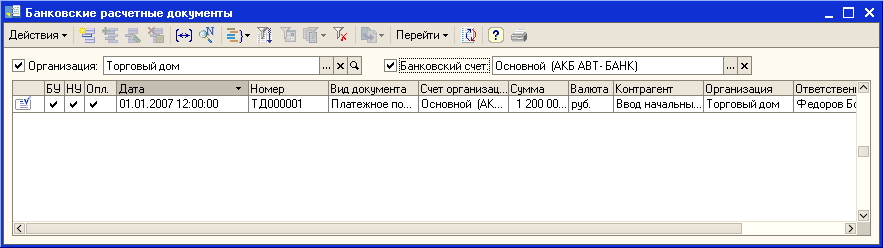
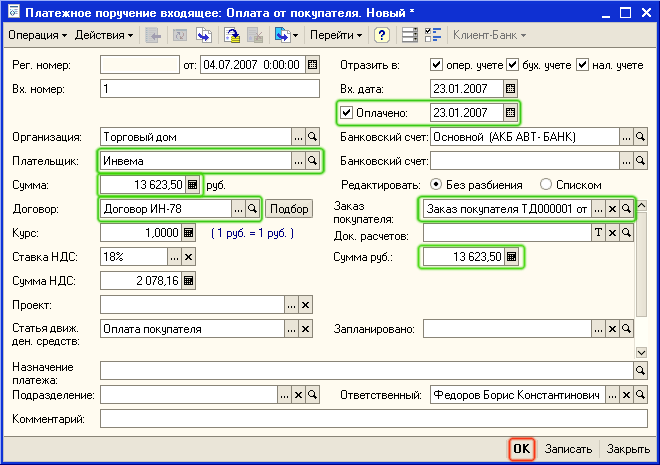
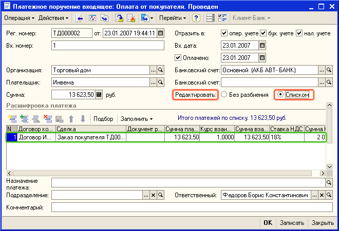

Поступление денежных средств на расчетный счет отражается в «Управление торговлей» документом Платежное поручение входящее с видом операции оплата от покупателя.
1. Откройте журнал Банковские расчетные документы. Для этого в меню Документы выберите пункт Денежные средства-Банк-Журнал "Банковские расчетные документы".

2. Для ввода нового платежного поручения нажмите кнопку  в форме журнала. В открывшемся окне выберите тип документа - Платежное поручение входящее, нажмите кнопку ОК.
в форме журнала. В открывшемся окне выберите тип документа - Платежное поручение входящее, нажмите кнопку ОК.
3. Откроется форма нового платежного поручения. Часть реквизитов подставится в форму документа автоматически. Заполните остальные значения реквизитов документа так, как показано на рисунке:

4. Поля в платежном поручении заполняйте последовательно. После выбора информации о плательщике и договоре заполните информацию о заказе покупателя (счете на оплату), по которому пришли денежные средства. Установка флага Оплачено означает, что денежные средства поступили на расчетный счет. Дата справа от флага Оплачено - это дата банковской выписки, когда была зарегистрирована данная торговая операция - поступление денежных средств от покупателя Инвема на расчетный счет организации Торговый дом.
5. Нажмите на кнопку ОК. При проведении документа увеличится остаток денежных средств на расчетном счете и изменится состояние взаиморасчетов с покупателем. Заказ покупателя будет считаться оплаченным. Документ появится в журнале Банковские расчетные документы.
Совет
Если покупатель оплачивает одним платежным поручением несколько заказов (счетов на оплату), то для заполнения этой информации в платежном поручении переключите режим Редактировать в положение Списком. Появится табличная часть документа (Расшифровка платежа), в которую можно ввести информацию о нескольких заказах (счетов на оплату). Для быстрого заполнения расшифровки платежа можно воспользоваться кнопками Подбор или Заполнить.

Только что Вы научились оформлять поступление денежных средств от покупателя. Из следующего раздела Вы узнаете, как оформить отгрузку товаров по счету с